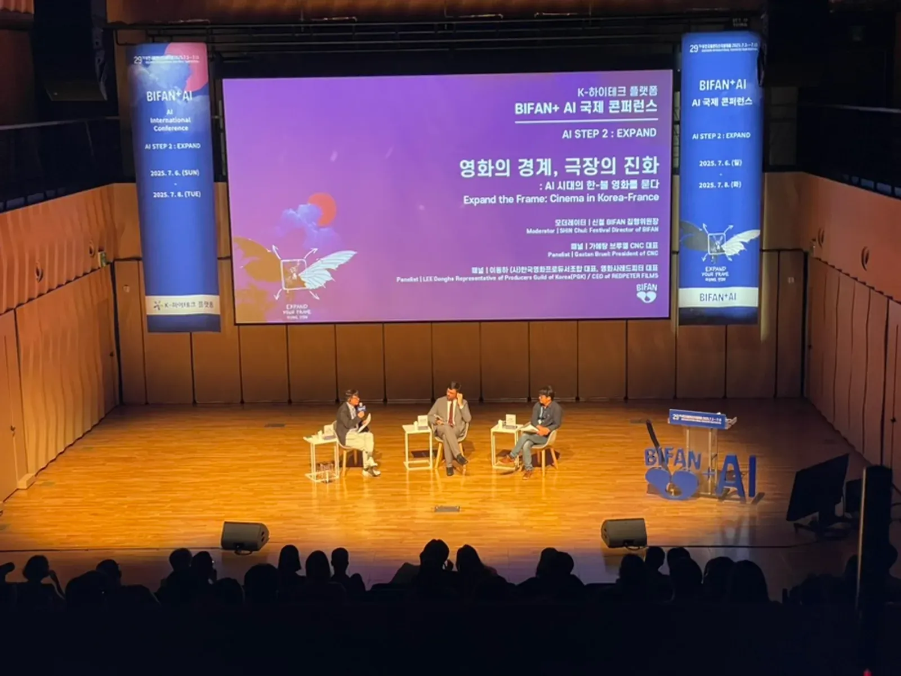
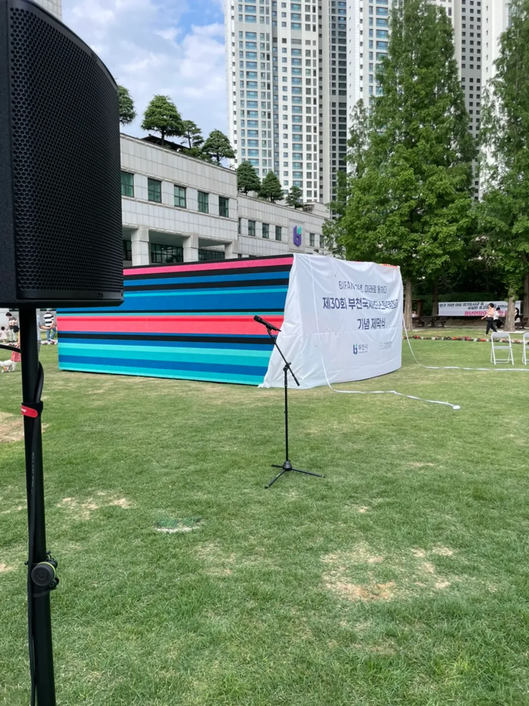
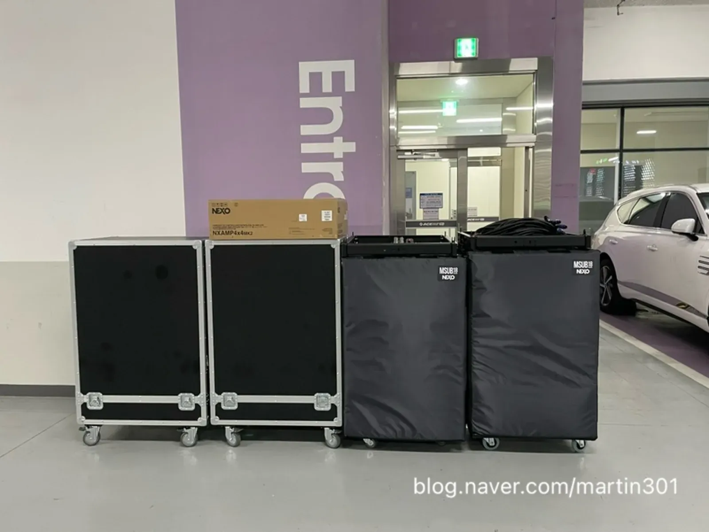

부천 제막식 음향은 「인사 한마디가 정확히 들리는가」와 「제막 순간에 음악이 딱 맞게 나오는가」 두 가지로 성패가 갈립니다. 공식 행사일수록 말 한마디가 정확히 전달되어야 하고, 식순이 짧은 대신 순서 사이 틈이 드러나기 쉽습니다. 제이식스미디어가 2026년 부천국제판타스틱영화제 제막식 음향을 부천시청 앞 잔디광장에서 맡았던 현장을 바탕으로, 야외 공식 행사 담당자가 챙길 것을 정리했습니다.

- 제막식 음향은 식순표를 기준으로 순서마다 마이크 · 음악 · 신호를 한 줄씩 정리하는 데서 시작합니다.
- 내빈 인사는 스탠드 마이크와 여분 핸드 마이크를 함께 두고, 스피커는 참석자 쪽을 향하게 둡니다.
- 제막 순간은 사회자 카운트다운, 음악, 막을 걷는 사람의 신호가 한 번에 맞아야 하니 리허설에서 두 번 이상 맞춰 봅니다.
- 야외 광장에서는 전기 위치와 비 · 바람 대비를 행사 전에 정해 둡니다.
1. 부천 제막식 음향, 식순표가 설계도입니다
제막식은 보통 개식, 내빈 소개, 인사 · 축사, 제막, 기념촬영 순서로 짧게 이어집니다. 순서가 짧은 만큼 마이크가 늦게 켜지거나 음악이 늦게 나오면 그 틈이 그대로 드러납니다. 식순표에 순서마다 마이크 · 음악 · 신호를 한 줄씩 적어 두면 음향 운영자가 흐름을 놓치지 않습니다.
| 순서(예시) | 마이크 | 음악 · 효과 | 신호 |
|---|---|---|---|
| 개식 · 내빈 소개 | 사회자 핸드 | 입장 음악 줄이기 | 사회자 첫 멘트 |
| 인사 · 축사 | 스탠드 마이크(여분 핸드) | 없음 | 인사자 단상 이동 |
| 제막 | 사회자 카운트다운 | 제막 음악 · 효과음 | 「하나」에 맞춰 시작 |
| 기념촬영 | 사회자 안내 | 배경 음악 | 사진 촬영 안내 |
| 폐식 | 사회자 | 퇴장 음악 | 사회자 마무리 멘트 |
2. 판타스틱 포털 제막식은 이런 자리였습니다
2026년 6월 9일, 부천시청 앞 잔디광장에서 부천국제판타스틱영화제의 시작을 예고하는 제막식이 열렸습니다. 영화제 30주년을 기념하는 구조물 「판타스틱 포털」을 처음 공개하는 자리였고, 시장과 조직위원장 등 많은 분이 참석한 야외 공식 행사였습니다. 제이식스미디어는 이 제막식 음향을 맡았고, 같은 영화제의 AI 컨퍼런스 · 마켓 음향도 2024년부터 2026년까지 함께했습니다.
자세한 기록은 판타스틱 포털 제막식 이야기에 사진과 함께 있습니다.

3. 인사 마이크와 스피커는 참석자 쪽으로
제이식스미디어 하는 일 페이지에는 「많은 분이 참석하는 공식 행사일수록 말 한마디가 정확히 전달되어야 합니다」라고 적혀 있습니다. 야외 공식 행사는 참석자가 서 있거나 넓게 퍼져 있어, 단상 근처만 크게 들리고 뒤쪽은 안 들리기 쉽습니다.
- 인사용 스탠드 마이크는 단상 높이에 맞추고, 키가 다른 인사자를 위해 높이 조절할 사람을 정해 둡니다.
- 스탠드 마이크가 문제를 일으킬 때를 대비해 여분 핸드 마이크를 사회자 옆에 켜 둡니다.
- 스피커는 참석자 쪽을 향하게 세우고, 단상 마이크 바로 앞에는 두지 않습니다(하울링 방지).
- 취재 · 촬영 팀이 있다면 소리를 따로 받아 갈 수 있는지 미리 물어 둡니다.
4. 제막 순간은 세 사람이 함께 맞춥니다
제막식의 하이라이트는 막이 걷히는 몇 초입니다. 사회자의 카운트다운, 음향 운영자의 음악 · 효과음, 막을 걷는 사람(또는 줄을 당기는 내빈)의 동작이 같은 순간에 맞아야 합니다.
- 사회자 — 「다섯, 넷, 셋, 둘, 하나」를 또렷하게 셉니다.
- 음향 운영자 — 「하나」에 맞춰 제막 음악과 효과음을 올립니다.
- 제막 담당 — 같은 신호에 막을 걷습니다.
- 리허설 때 세 사람이 같은 신호로 두 번 이상 맞춰 봅니다.

5. 잔디광장 야외 행사, 전기와 날씨를 봅니다
광장이나 잔디밭 행사는 음향 장비에 쓸 전기를 어디서 끌어올지 행사 장소 관리 쪽에 미리 확인해야 합니다. 선이 참석자 동선을 가로지르면 덮개를 씌우고 표시합니다. 비 예보가 있으면 믹서와 장비를 덮을 천이나 옮길 자리를 정하고, 행사를 실내로 옮길지 줄일지는 주최 측이 기준을 정해 둡니다.
| 확인 | 누구에게 | 메모 |
|---|---|---|
| 전기 위치 · 거리 | 장소 관리 담당 | 음향 장비 쪽 전원 |
| 장비 차 진입 · 시간 | 장소 관리 담당 | 잔디 보호 조건이 있는지 |
| 비 · 바람 기준 | 주최 측 | 연기 · 축소를 누가 언제 정하는지 |
| 식순 최종본 | 주최 측 | 행사 전날까지 |
6. 부천 제막식 음향 견적 문의 전에 정리할 것
남양주 별내 사무실에서 부천시청까지 차로 약 45분 · 53.9km(막히지 않을 때 기준)입니다. 오전 행사라면 설치와 리허설 시간을 넉넉히 잡을 수 있도록 장소를 쓸 수 있는 시간을 함께 알려 주세요.
자동 견적서에서 항목을 골라 보내 주시면 확인 후 안내합니다. 견적서에는 단가가 「협의」로 나오고, 담당자가 현장 여건을 확인한 뒤 확정 견적을 보냅니다.
| 자동 견적서 항목 | 언제 고르나 |
|---|---|
| 지자체 · 컨퍼런스 음향 | 제막식 · 개막식 · 컨퍼런스 음향을 통째로 맡길 때 |
| 음향 (중형) | 참석자가 모이는 야외 공식 행사 규모일 때 |
| 무선 마이크 추가 | 사회 · 인사 · 여분 마이크가 더 필요할 때 |
| 음향 엔지니어 | 식순에 맞춰 마이크와 음악을 운영할 때 |
지역 안내는 부천 음향 · 설치 안내, 마이크 준비는 무선마이크 준비 글, 실내 강연 음향은 경기 광주 세미나 음향 글에 정리했습니다.
자주 묻는 질문
제막식은 음향이 얼마나 필요한가요?
참석 규모와 장소 넓이에 따라 다릅니다. 식순표와 장소 사진, 예상 참석 범위를 보내 주시면 구성을 함께 봅니다.
제막 음악은 누가 준비하나요?
쓰고 싶은 음악이 있으면 행사 전에 파일로 보내 주세요. 식순표에 음악이 나올 시점을 적어 주시면 리허설 때 맞춰 봅니다.
비가 오면 어떻게 하나요?
장비를 덮거나 옮길 자리를 미리 정해 두고, 행사를 줄이거나 옮길지는 주최 측과 행사 전에 기준을 정합니다.